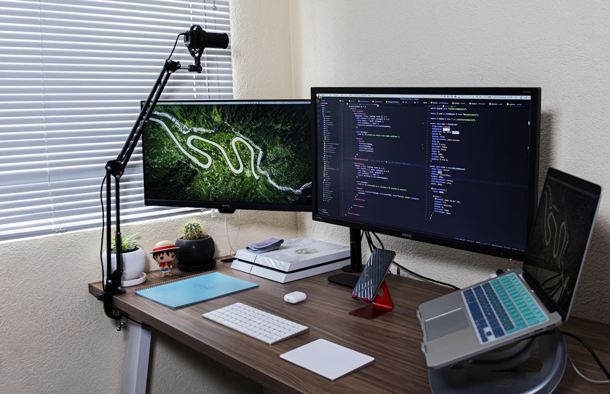
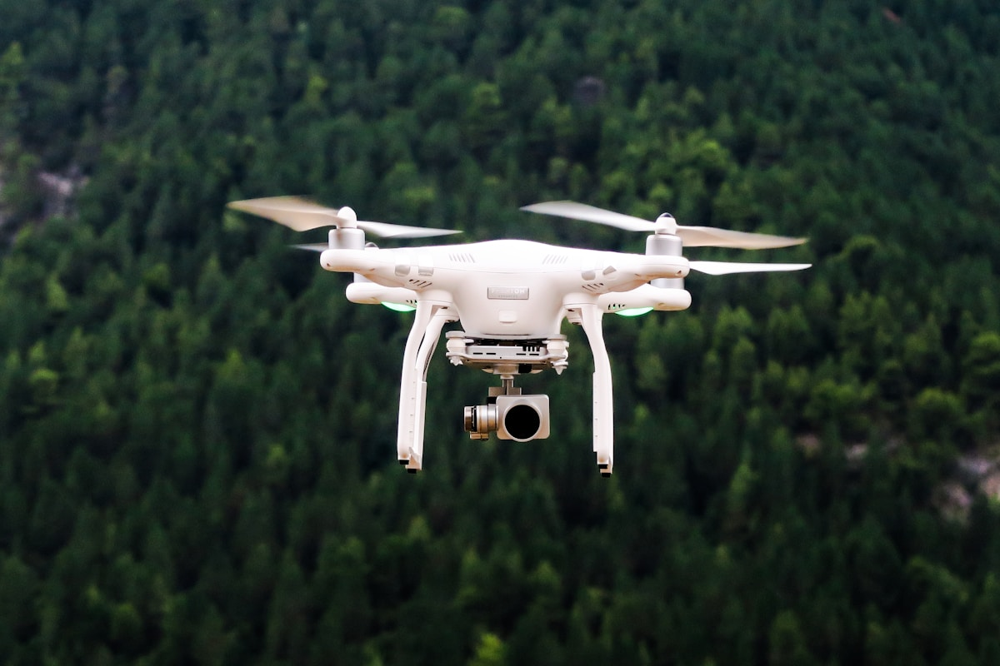
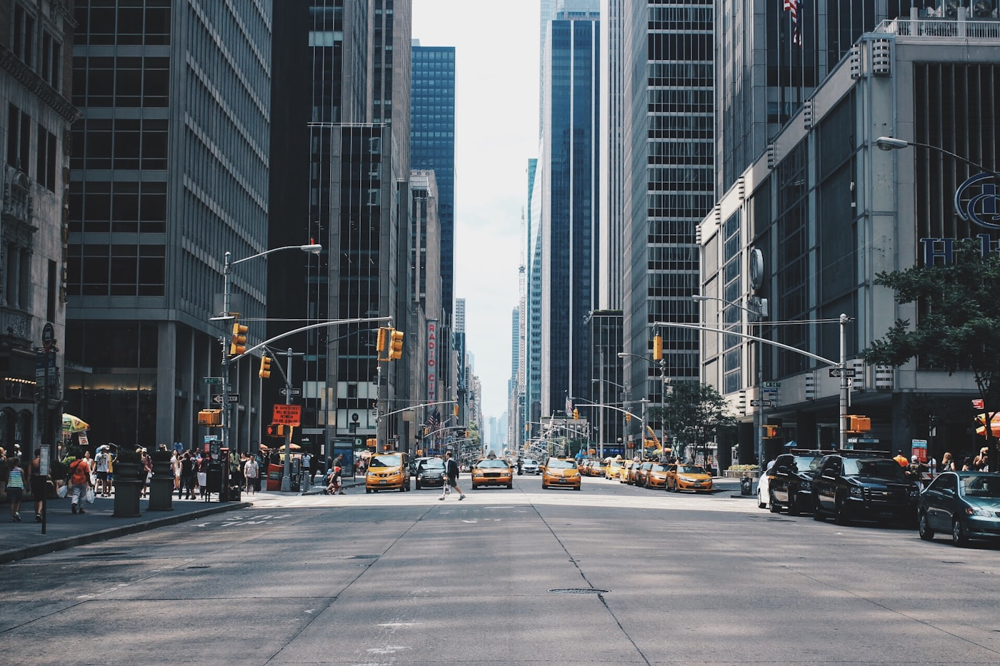
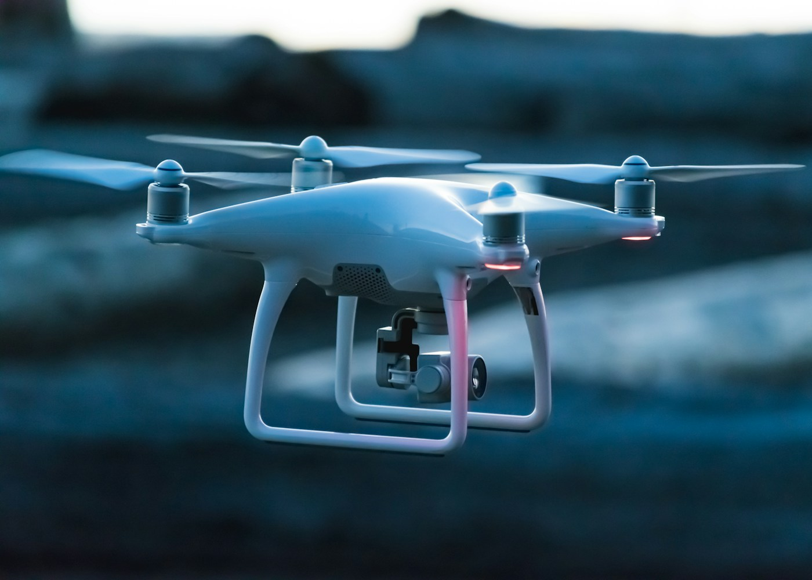

500×500
Urban Grid
Urban Occlusion-Aware
도심 속 복잡한 시야 가림(Occlusion) 상황을 학습하는 다중 에이전트 강화학습 기반 드론 추적-회피 시스템. 3D 시뮬레이션과 실제 제어 계층 사이를 하나의 전략으로 연결합니다.
Who We Are
도심 가림 환경에서 추적자와 회피자가 동시에 적응하는 학습 구조를 설계하고, 실제 제어 파이프라인으로 확장 가능한 Sim2Real 아키텍처를 구축합니다.
500×500
Urban Grid
8
Path Algorithms
100%
Theta* Success
16주
Project Timeline
Architecture Blueprint
3D 환경 인지, 정책 학습, 제어 계층, 분석 파이프라인을 한 구조로 묶어 복잡한 도심 추적-회피 시나리오를 안정적으로 학습합니다.
Core Module
Raycasting 기반 LOS 판별과 상태 기억을 결합해, 은폐 가능성과 포획 위험을 동시에 고려하는 추적/회피 정책을 학습합니다.

Algorithm
협력과 경쟁이 동시에 일어나는 다중 에이전트 정책 최적화.
Scenario

추적자/회피자 비대칭 보상을 통한 전략적 의사결정 학습.
Environment

다층 장애물과 시야 차단이 반영된 3D 디지털 트윈 환경.
Project Tracks

Domain 01
도심 격자에서 LOS 차단 경로를 학습하고 추격자 재탐지 시간을 정량화합니다.

Domain 02
건물 밀집 환경에서 체크포인트 기반 보상으로 목표 지점 재탐색 성능을 개선합니다.
Domain 03
추적자-회피자 비대칭 보상 설계로 self-play 단계 전환을 준비합니다.

Domain 04
절차적 맵에서 시야 가림 패턴을 늘려도 성능이 붕괴하지 않도록 일반화 지표를 추적합니다.
Lab Notes
Paper & Docs
복잡한 도심 시야 가림을 센서/보상/커리큘럼으로 분해해 단계적으로 검증하고, 실험 로그와 재현 가능한 설정 파일을 기반으로 팀 단위 개선 사이클을 운영합니다.
Read Full DocumentationStage0 50-episode eval: survival 100%, goal 68%, capture 0% 달성 (2026-03-21)
Stage1 v13c rootfix: 250k까지 resume 완료, final +11.684 / peak +14.592 (2026-04-08)
Stage1 이슈 대응: MaxEpisodeSeconds scene sync 문제 재발 방지 체크리스트 반영
다음 스프린트: Stage2 self-play 전환 및 LOS break metric 계측 자동화
Join the Project
실험 로그, 설정 파일, 분석 리포트를 공개하며 매주 스프린트 단위로 개선합니다.